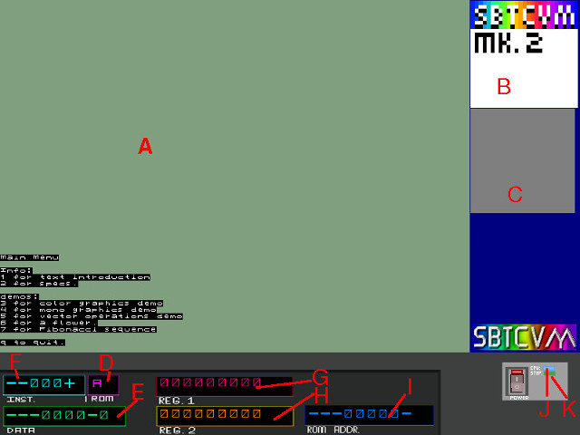

|  |
|
| Key |
description |
| F2 |
Toggle Step-by-step debug mode |
| F4 |
toggle Status Display |
| F7 |
dump raster displays |
| F8 |
screenshot |
| F10 |
manual memory dump |
| ESCAPE |
Bring up pause menu. |
| Status Message |
description |
| VM SYSHALT: soft stop. |
This SYSHALT message is triggered by the
"STOP" instruction. usually a program will use this when
it needs to shut down the VM |
| VM SYSHALT: User stop. |
This SYSHALT is triggered by the user
pressing the ESCAPE key. |
| REG1 DUMP: |
The program has told the VM to dump the
current state of CPU Register 1. |
| REG2 DUMP: | The program has told the VM to dump the current state of CPU Register 2. |
| VM SYSHALT: THREAD COLLISION! |
The program attempted to start a thread ID
that is already active. |
| VM SYSHALT: NO ACTIVE THREADS! |
The program has killed and/or stopped all
active threads. |
| VM SYSHALT: T-ACT FAULT |
a emulation bug has lead to the current
thread being an inactive thread in a unexpected way. (aka
you normally won't see this) |